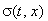
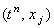
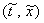
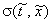
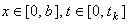
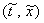
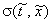
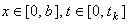

|
1.1. Исследование устойчивости явных разностных схем.
Рассмотрим одномерное дифференциальное уравнение параболического типа,
в котором коэффициент при производной второго порядка по координате не является константой,
а зависит от переменных t и x:
Поскольку в математических моделях физико-химических процессов любой коэффициент
является физической величиной, то для любых значений переменных t и x должно выполняться условие:
Запишем для уравнения (13.1) явную разностную схему,
стабилизируя значение функции 
в точке  на разностной сетке:
В разделе 3.4 было доказано, что такая разностная схема условно устойчива. Условием устойчивости
для случая, когда  является константой, служит соотношение (3.12). Выясним, какой вид будет иметь
условие устойчивости для разностной схемы (13.2). Для этого выберем на разностной сетке произвольную
точку :
Запишем для уравнения (13.1) явную разностную схему с постоянным коэффициентом :
Соотношение (3.12), являющееся условием устойчивости, для разностной схемы (13.3) имеет вид:
Однако точка - произвольно выбранная точка на разностной сетке, и, следовательно,
значение - произвольно выбранное значение,
которое может принимать функция при заданных интервалах изменения
переменных t и x. Но для устойчивости разностной схемы (13.3) необходимо, чтобы условие (13.4)
выполнялось для любой точки на разностной сетке. Поэтому для записи условия (13.4) следует выбрать
максимальное значение, которое может принимать функция
при заданных интервалах изменения переменных :
Данное условие и является условием устойчивости явной разностной схемы (13.2). является константой, служит соотношение (3.12). Выясним, какой вид будет иметь
условие устойчивости для разностной схемы (13.2). Для этого выберем на разностной сетке произвольную
точку :
Запишем для уравнения (13.1) явную разностную схему с постоянным коэффициентом :
Соотношение (3.12), являющееся условием устойчивости, для разностной схемы (13.3) имеет вид:
Однако точка - произвольно выбранная точка на разностной сетке, и, следовательно,
значение - произвольно выбранное значение,
которое может принимать функция при заданных интервалах изменения
переменных t и x. Но для устойчивости разностной схемы (13.3) необходимо, чтобы условие (13.4)
выполнялось для любой точки на разностной сетке. Поэтому для записи условия (13.4) следует выбрать
максимальное значение, которое может принимать функция
при заданных интервалах изменения переменных :
Данное условие и является условием устойчивости явной разностной схемы (13.2).
Используя аналогичные рассуждения, можно получить условие
устойчивости явной разностной схемы, аппроксимирующей одномерное дифференциальное уравнение
в частных производных первого порядка, в котором коэффициент при производной по координате
не является константой:
|